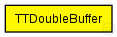
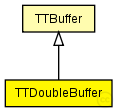

This documentation is released under the Creative Commons license
This documentation is released under the Creative Commons licenseRepresents a double buffer for time-triggered traffic. Messages are sent using the configured send window.
The buffer stores only one message at a time that is overwritten on each insert. The buffer sends a copy of the stored frame after each bag.
Author: Till Steinbach
The following diagram shows usage relationships between types. Unresolved types are missing from the diagram. Click here to see the full picture.
The following diagram shows inheritance relationships for this type. Unresolved types are missing from the diagram. Click here to see the full picture.
| Name | Type | Description |
|---|---|---|
| TTBuffer | simple module |
Represents an abstract Buffer for time-triggerd traffic. Messages are sent using the configured send window. |
| Name | Type | Description |
|---|---|---|
| Switch1 | compound module | (no description) |
| Unit1 | compound module | (no description) |
| Unit2 | compound module | (no description) |
| Unit3 | compound module | (no description) |
| Name | Type | Default value | Description |
|---|---|---|---|
| priority | int | -1 |
Priority of the buffer (currently only used for rate-constrained traffic) |
| ct_id | int | 0 |
Critical traffic ID of the buffer |
| ct_marker | int | 0 |
Critical traffic marker of the buffer |
| ct_mask | int | 0 |
Critical traffic mask of the buffer |
| destination_gates | string | "" |
Comma seperated list of gates where the frames of the buffer are delivered |
| sendWindowStart | int | 0 |
Beginning of the send window in number of ticks (Changes to this parameter will get active for future scheduled frames only) |
| sendWindowEnd | int | 0 |
End of the send window in number of ticks |
| Name | Value | Description |
|---|---|---|
| display | i=block/buffer | |
| class | TTDoubleBuffer |
TTDoubleBuffer is implemented by the TTDoubleBuffer C++ Class |
| Name | Direction | Size | Description |
|---|---|---|---|
| in | input |
The buffers Input |
|
| out | output |
The buffers Output WARNING: CURRENTLY NOT USED! |
|
| schedulerIn | input |
Input gate for the incoming SchedulerActionTimeEvent messages |
| Name | Title | Source | Record | Unit | Interpolation Mode |
|---|---|---|---|---|---|
| txPk | TX Packets | count, vector | |||
| latency | End-to-end latency | stats, histogram, vector | s |
// // Represents a double buffer for time-triggered traffic. Messages are sent using the configured // send window. // // The buffer stores only one message at a time that is overwritten on each insert. // The buffer sends a copy of the stored frame after each bag. // // @see TTBuffer, Buffer, // // @author Till Steinbach simple TTDoubleBuffer extends TTBuffer { //TTDoubleBuffer is implemented by the TTDoubleBuffer C++ Class @class(TTDoubleBuffer); }
This documentation is released under the Creative Commons license